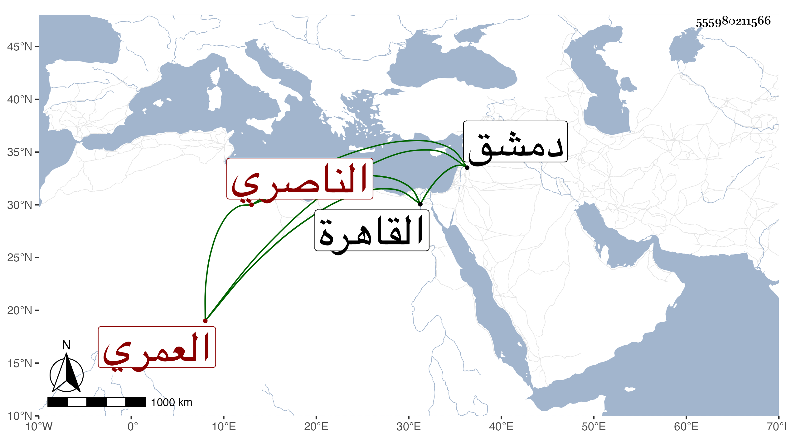

0902Sakhawi.DawLamic.ITO20230111-ara1.EIS1600.555980211566
Biography ID: 555980211566
665
قانباي العمري الناصري فرج بن قانقز أخت الظاهر برقوق ووالد فاطمة أم خوند الآتية . ممن تأمر وأرسل الناصر وهو بدمشق لنائب الغيبة بالقاهرة بخنقه فاتفق قتل الناصر قبل وصول القاصد ولكن لم يعلم النائب بذلك إلا بعد إمضائه الأمر فلما قدم المؤيد وقفت أمه إليه فأمر بقتل النائب فقتل فبادرت إلى كبده فصارت تنهمه ، وقد ذكره شيخنا في أنبائه فقال : قانباي قريب بيبرس ابن أخت الظاهر برقوق ، وكان خاصكيا ثم في دولة الناصر أميرا إلى أن عصى عليه فسجنه بالقلعة فلما وصل الخبر إلى القاهرة بكسر الناصر قتله سنبغا نائب القلعة وذلك في سنة خمس عشرة ويقال أن الناصر كان قرر معه ذلك انتهى . وهو والد زوجة جرباش الكريمي قاشق .
